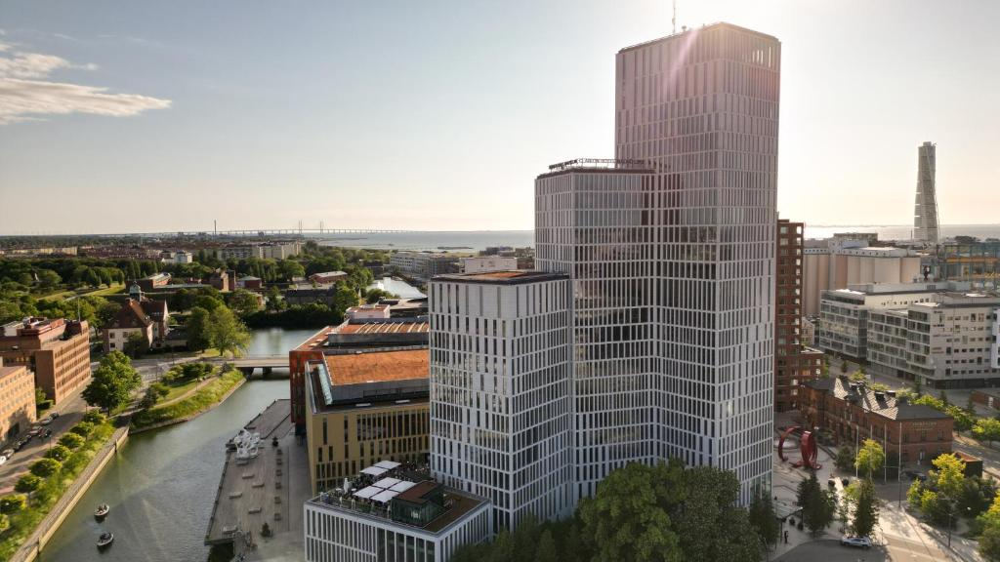

Local Information
The Venue
The EUMAS 2026 conference will be held at Malmö University, which is located in southern Sweden. Malmö is Sweden’s third biggest city and can be easily reached by train, bus, car, and plane.
The conference will take place in Malmö University’s Niagara building. Address for Niagara: Nordenskiöldsgatan 1, 211 19 Malmö.
The Conference site can be accessed by the following means of transportation:
- By plane:
- If traveling by plane, Copenhagen Airport (Kastrup, EKCH/CPH) is a convenient choice with over 200 direct routes. From the airport terminal, you can take the commuter train to Malmö, which will take around 25 minutes: Öresund train to Malmö Central Station.
- Malmö has an own airport as well (Sturup, ESMS/MMX): take the Airport buses to Malmö Central.
- Copenhagen Kastrup is often the more convenient choice for traveling to Malmö.
- By train
- From Malmö Central it is a 5 minutes walk to reach the building Niagara.
- Malmö can be reached by night train from Berlin/Hamburg (DE) via Copenhagen (DK).
- By taxi: Uber and Bolt are widely used ride-sharing applications in Malmö.
- By car: If you prefer to take your car, there are parking garages in the area (32 SEK/h and 165 SEK/day).
Accommodation Options
Looking for a place to stay? Below you’ll find a curated selection of hotels located just a short distance from the conference venue.
Please note that accommodation is not included in the conference registration. Malmö University has arranged special discounted rates at several nearby hotels through block bookings for EUMAS 2026 participants. Rooms are limited and offered on a first-come, first-served basis, so we encourage you to secure your stay early.
Nearby Hotels

In the heart of the city stands Hotel Noble House, a magnificent gem that enriches the city's skyline. With an unbeatable location adjacent to the city's central points, this is your perfect retreat. Here, you will not only find a place to stay but also a meeting place where the extraordinary becomes everyday. Our proximity to culture, shopping, nightlife, and lush parks completes your experience. Wake up to breathtaking views of the sea or the vibrant life of the city from many of our rooms. For detailed information and to book your stay with us, please visit our website.
Address: Per Weijersgatan 6, 211 34 Malmö
(Google maps, ca. 750m / 10 min walk from the conference venue)
Visit website

Down the street from Niagara and Orkanen, where the conference is being held, we find the Story hotel, a boutique hotel with modern rooms and a great view of Malmö’s city center or the Öresund Bridge and the sea. On the 14th floor of the hotel there is a bar and a large outdoor terrace with impressive views.
Address: Tyfongatan 1, 211 19 Malmö
(Google maps, ca. 500m / 7 min walk from the conference venue)
Visit website

Just across the street from Niagara, Clarion Hotel Malmö Live is a new landmark in the city’s skyline. Newly built, fresh and with all the amenities you could wish for, including a bar with great views of the city.
Address: Dag Hammarskjölds torg 2, 211 18 Malmö
(Google maps, ca. 100m / 2 min walk from the conference venue)
Visit website

Right next to Malmö Central is the Comfort Hotel, a nice mix of a 19th century market hall with dizzying ceiling heights, and a modern interior with a rock feel. Here you can play boules, table tennis and table football in their Playground for grown-ups.
Address: Carlsgatan 10C, 211 20 Malmö
(Google maps, ca. 800m / 8 min walk from the conference venue)
Visit website